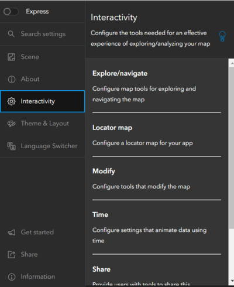
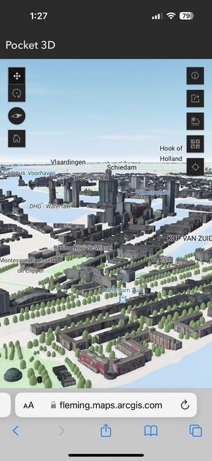
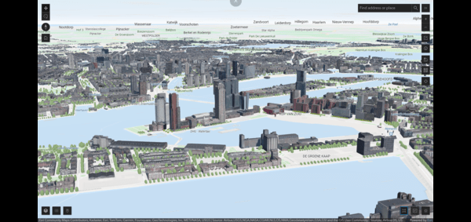

ArcGIS Instant Apps
ArcGIS Instant app is a web based application which provides number of options to a user to configure the app and to show the Mapping data in 2D as well as 3D. It can also have specific templates for viewing scene, comparing content, exploring gallery of contents etc.
| Advantages |
Disadvantages |
| User-Friendly |
Difficult to use in small screens with pop-ups enabled |
| Separate view for mobile devices available to configure |
Not configured for landscape view |
| Compatible with 3D Scenes |
Needs Access to ArcGIS Online |
| Displays interactive 3D maps |
Reliant on internet connection |
| No coding needed |
Sometimes data makes the interface to crash on mobile devices |
ArcGIS Instant App
Process
Please note: these links may be unusable in the future due to licensing expirations.
- Step 1. I logged in to ArcGIS Online and Selected the ArcGIS Instant apps to launch it, and then Selected the 3D View option of the Application.
- Step 2. Then, I added the appropriate title and description and started Configuring the Application acording to our needs and also watched the tutorial on how to configure/Develop an ArcGIS Instant App.
- Turned off the Express mode to get more feature configurations on the app

- Step 3. Added the app functionalities like full screen mode, Welcome screen, Time animation, basemaps interchangeability, weather visualization, Layer list.

- Step 4.Published the Application
- Mobile View of Instant App

- Desktop View of the Instant App

- Overall Steps :
- Create a new application
- Select layers you want to add
- Configure the View Options
- Modify the Application via adding features of your choice
- Add Basemap Gallery
- Share and set sharing levels
Outcomes
Things I explored